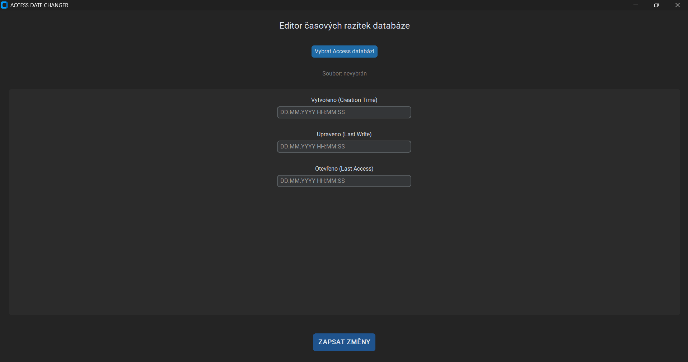

About me
I'm Ondra, a student at the Secondary School of Applied Cybernetics.
Czech, so I work in both Czech and English.
You'll find me as oondraa, or under OZLAB, a fictional company. For now.
Let's build something
Freelancer, open to anything: rebuilds of old websites, brand new startups, for individuals, sole traders and companies. Usually through a DOPP contract, other arrangements possible, but that one works best.
Spotify Live Wrapped
Your wrapped every day not just in December. Connects to your Spotify account and keeps your listening stats (top tracks, artists and genres) up to date all year, running on your own machine.
ADC — Access Date Changer

A lightweight, standalone Windows utility designed to modify system timestamps (Creation, Modification, and Access dates) for Microsoft Access databases (.accdb and .mdb).